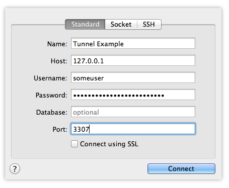

If you're interested in more of this type of content, check out the Servers for Hackers eBook!
We use SSH to log into our servers, but it actually has a lot of neat tricks it can help us with as well! We'll cover some of them here.
Logging in
Of course, we use SSH to login:
$ ssh user@hostname
And, if needed, we can specify a different port:
$ ssh -p 2222 user@hostname
Sometimes, if we have a lot of SSH keys in our ~/.ssh directory, we'll often find that SSHing into servers with the intent of using a password results in a "too many authentication attempts" error. If we need to log into a server with a password, we can attempt to force password-based login. This will stop SSH from attempting to use your SSH keys first:
$ ssh -o "PubkeyAuthentication no" username@hostname
If you use AWS, and in other cases, you might get a PEM file to use as an identity. In this case, you might need to specify a specific identity file to use when logging in. We can do this with the -i flag:
$ ssh -i /path/to/identity.pem username@hostname
You may need to set your permissions on the pem file so only the owner can read/write/execute it:
chmod 0600 identity.pemorchmod u+rw identity.pem && chmod go-rwx identity.pem
SSH Config
Here's something really powerful.
If you want to setup aliases for servers you access often, you can create an ~/.ssh/config file and specify each server you log into, along with the authentication method to use:
$ vim ~/.ssh/config
Host somealias
HostName example.com
Port 2222
User someuser
IdentityFile ~/.ssh/id_example
IdentitiesOnly yes
Host anotheralias
HostName 192.168.33.10
User anotheruser
PubkeyAuthentication no
How aws
HostName some.address.ec2.aws.com
User awsuser
IdentityFile ~/.ssh/aws_identity.pem
IdentitiesOnly yes
So, there's a few example entries you might find in the ~/.ssh/config file (you can have as many entries as you'd like).
Using a defined host ("alias") is as easy as this:
$ ssh somealias
Let's cover the options used above:
- HostName - The server host (domain or ipaddress)
- Port - The port to use when connecting
- User - The username to log in with
- IdentityFile - The SSH key identity to use to log in with, if using SSH key access
- IdentitiesOnly - "Yes" to specify only attempting to log in via SSH key
- PubkeyAuthentication - "No" to specify you wish to bypass attempting SSH key authentication
SSH Tunneling
SSH can be used for tunneling, which is essentially port forwarding. There's a few ways we can do this - Local (Outbound), Remote (Inboud), and some others (Dynamic and Agent Forwarding).
Local Port Forwarding
Local port forwarding is what you use when you need to tunnel through a server's firewall or other limitation.
A common example is attempting to connect to a remote database which is either behind a firewall or is only listening to local connection. For example, MySQL only listens to localhost connections by default. You can't remotely connect to it without editing the my.cnf file and have it listen on all networks. There's also a firewall preventing you connecting to MySQL's port 3306 anyway.
Remote means any computer that isn't yours, which includes virtual machines (guests) inside of your host computer
Assuming we have SSH access to the remote server, we can get around this by creating a tunnel into the server. What might that look like?
ssh -L 3306:localhost:3306 username@hostname
Let's go over this:
-L- Setup local port forwarding3306- The local port to forwardlocalhost:3306- Within the remote server, what address and port to forward traffic to. Since the MySQL server is on the remote server, we're tunneling to the remote server's "localhost" on port 3306, which MySQL is listening to.username@localhost- The SSH username and host to connect to
I can then use my local client to connect to the remote server as if it's a local one:
Now, I used the same port locally and remotely, but I could have specified a different local port to use:
ssh -L 3307:localhost:3306 username@hostname
Then my local mysql client would have to connect to port 3307, which would still tunnel to the remote server's local 3306:

Remote Port Forwarding
Remote Port Forwarding is good if you need to share your local computer with others who are outside of your network.
To do this, we need a remote server all parties can reach. Something like a AWS or Digital Ocean server will do.
First, let's pretend our local computer has a web server running on port 8001:
# On our local machine:
$ curl localhost:8001
Hi!
We want our friends to see our website, which simply says "Hi!". Let's use a remote server to forward requests to our local computer:
# Still on our local machine:
ssh -R 9000:localhost:8001 username@hostname
Let's go over this command:
-R- Using remote port forwarding9000- The remote server's port to use (not our local server this time!)localhost:8001- The local address to forward to. Since our webserver is on localhost port8001, that's what we specify here. (Yep, the order of those arguments changed for -R over -L!)username@hostname- SSH access to the remote server
If our remote server's IP address was 123.123.123.123, then our friends can access our website at 123.123.123.123:9000, which will forward to our local site at localhost:8001!
Note: To accomplish this, your remote server's firewall must not block port 9000. You may also need to edit /etc/ssh/sshd_config and set the GatewayPorts directive to yes. (Don't forget to restart SSH after any changes to sshd_config).
One-Off Commands
You can run commands remotely using SSH as well - in fact, this might be the easiest "trick" for using SSH.
When you run a command using SSH, you're running the command on the remote server. However, any resulting output will be displayed in your terminal.
Let's just run some simple commands on a remote server. The following will run pwd command. We'll see that it returns the default folder that we would be in after logging in. The we'll run the ls command to see the directory's output:
# Run `pwd` command
$ ssh -p 2222 username@hostname pwd
/home/username
# Run `ls -la` command
$ ssh -p 2222 username@hostname ls -la
drwxr-xr-x 8 username username 4096 Jun 30 17:49 .
drwxr-xr-x 4 root root 4096 Apr 28 2013 ..
-rw------- 1 username username 18589 Jun 30 17:49 .bash_history
-rw-r--r-- 1 username username 220 Apr 28 2013 .bash_logout
-rw-r--r-- 1 username username 3486 Apr 28 2013 .bashrc
-rw-r--r-- 1 username username 675 Apr 28 2013 .profile
drwxrwxr-x 2 username username 4096 Mar 15 14:21 .ssh
Ansible
This is actually the basis of how some server provisioning tools work. In fact, Ansible is very similar - it will run commands over SSH on groups of servers (in series and in parallel).
Let's see how that works on Ubuntu really quickly.
First install Ansible on a server that will be doing provisioning (not the one being provisioned):
sudo apt-add-repository -y ppa:rquillo/ansible
sudo apt-get update
sudo apt-get install -y ansible
Then, configure one or more servers in the /etc/ansible/hosts directory:
[web]
192.168.22.10
192.168.22.11
192.168.22.12
Save that file and then let's run a command on all three servers!
$ ansible -k all -m ping -u vagrant
This will run "ping" on each server. You'll get some JSON output saying if they were successful or not.
The flags of that command:
-k- Ask for passwordall- All servers configured in/etc/ansible/hosts-m ping- Use the ping module-u vagrant- Login with user "vagrant", which will work if the hosts defined are other vagrant servers. Change the username as needed.
You can actually run any command using the "shell" module:
$ ansible -k all -m shell -u vagrant -a "apt-get install nginx"
Here, the -a "apt-get install nginx will run the given command using the "shell" module.
Here's more information on running ad-hoc commands with Ansible!